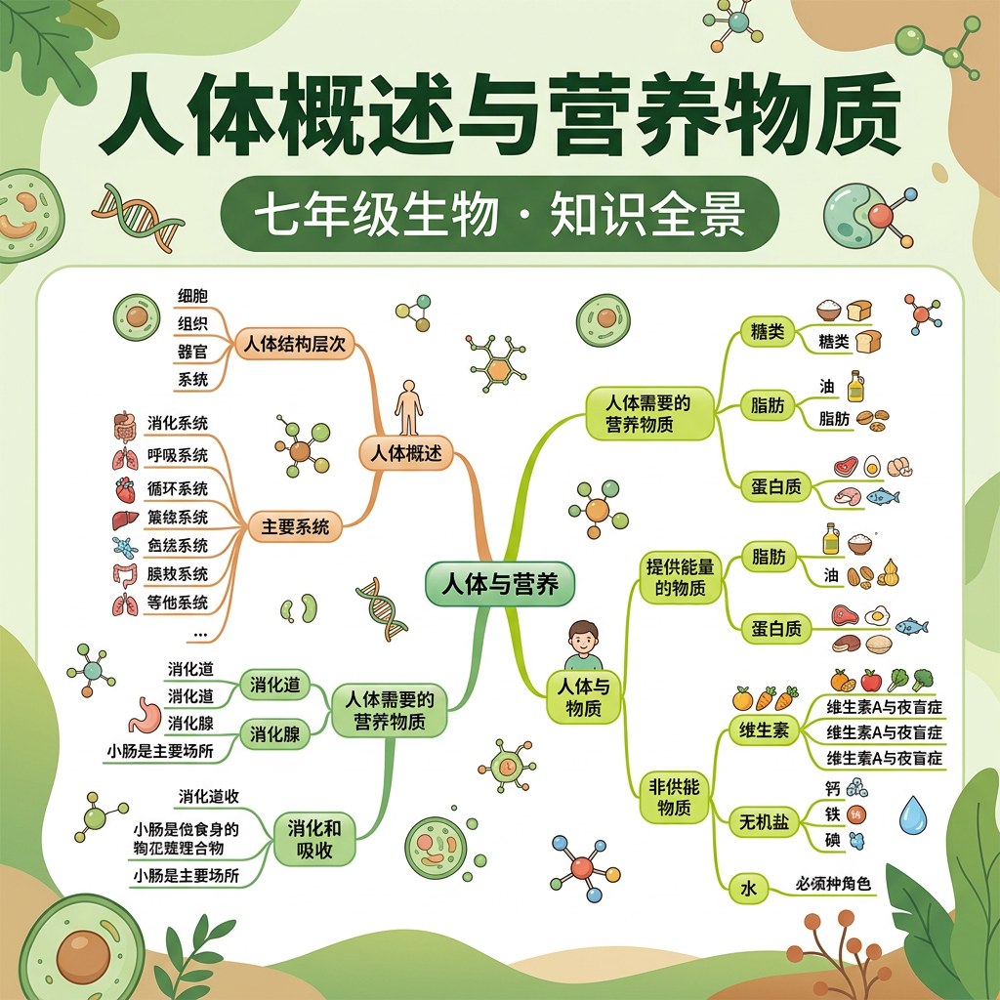

认识六大营养物质——糖类·蛋白质·脂肪·水·无机盐·维生素的功能与来源

| 功能 | 构成细胞的重要原料；参与酶·激素·抗体的合成；必要时提供能量 |
|---|---|
| 来源 | 🥩 瘦肉·鱼虾 🥚 鸡蛋 🥛 牛奶 🫘 豆制品（大豆蛋白） |
| 缺乏 | 生长发育迟缓（儿童）；免疫力下降；水肿（蛋白质缺乏症） |
| 过多 | 加重肾脏负担；多余蛋白质转化为脂肪 |
| 功能 | 储存和提供大量能量（能量密度最高，1g≈9kcal）；保温隔热；保护内脏；构成细胞膜 |
|---|---|
| 来源 | 🫒 植物油·坚果 🥓 动物脂肪 🧈 奶油·芝士 |
| 注意 | 脂肪是备用能源，糖类不足时才大量动用；适量摄入，防止摄入过多 |
| 功能 | 构成细胞主要成分（占体重60%-70%）；运输营养物质和代谢废物；参与各种化学反应；调节体温 |
|---|---|
| 来源 | 🚰 饮水（每天1500-2000ml） 🍎 水果蔬菜 🍲 食物含水 |
| 缺乏 | 脱水；细胞无法正常运作；严重时危及生命 |
| 无机盐 | 主要功能 | 缺乏症 |
|---|---|---|
| 钙（Ca） | 骨骼和牙齿的主要成分 | 佝偻病（儿童）、骨质疏松（成人） |
| 铁（Fe） | 血红蛋白的组成成分，运输O₂ | 缺铁性贫血（面色苍白、乏力） |
| 碘（I） | 甲状腺激素的组成成分 | 地方性甲状腺肿（大脖子病） |
| 磷（P） | 骨骼·细胞膜·ATP的组成 | 骨骼发育不良 |
| 锌（Zn） | 促进生长发育和免疫功能 | 生长迟缓、食欲不振 |
| 维生素 | 主要功能 | 缺乏症 | 来源 |
|---|---|---|---|
| 维生素A | 维持视觉（视紫红质）；皮肤健康 | 夜盲症 | 动物肝脏·胡萝卜 |
| 维生素B₁ | 辅助糖类代谢；维持神经系统 | 脚气病（神经炎） | 粗粮·豆类·瘦肉 |
| 维生素C | 促进铁吸收；维持血管壁弹性 | 坏血病（牙龈出血） | 新鲜蔬菜·水果 |
| 维生素D | 促进钙磷吸收；骨骼发育 | 佝偻病（配合钙缺乏） | 鱼肝油·日晒合成 |
糖蛋脂水盐维生（糖类·蛋白质·脂肪·水·无机盐·维生素）脂肪（9kcal/g）> 糖类（4kcal/g）> 蛋白质（4kcal/g）糖类｜储备供能：脂肪｜备用供能：蛋白质
| 器官 | 主要功能 |
|---|---|
| 🦷 口腔 | 牙齿物理磨碎食物；唾液淀粉酶开始消化淀粉 |
| 🍽 食道 | 蠕动将食物输送入胃，无消化功能 |
| 💛 胃 | 蠕动搅拌食物；胃蛋白酶开始消化蛋白质；盐酸杀菌 |
| 🟡 小肠 | ★消化和吸收的主要场所★；接受胰液+肠液+胆汁；绒毛增大吸收面积 |
| 🟤 大肠 | 吸收水分和无机盐；形成并排出粪便 |
| 🫀 肝脏 | 分泌胆汁（乳化脂肪，不含酶）；最大的消化腺 |
| 🟠 胰腺 | 分泌胰液（含淀粉酶+蛋白酶+脂肪酶，最全面的消化液） |
| 营养物质 | 消化开始 | 消化完成 | 吸收部位 |
|---|---|---|---|
| 糖类（淀粉） | 口腔（唾液淀粉酶） | 小肠 | 小肠 |
| 蛋白质 | 胃（胃蛋白酶） | 小肠 | 小肠 |
| 脂肪 | 小肠（胆汁乳化后） | 小肠 | 小肠 |
小肠 — 消化 + 吸收的主要场所肝脏 — 分泌胆汁（无酶，只乳化脂肪）胆汁乳化 + 胰脂肪酶，全程在小肠完成
糖类供能是首选，蛋白质来建细胞脂肪储能最丰富，水盐维生来调节小肠消化吸收主，肝脏胆汁来乳化
本节课在人体生理知识体系中的位置：